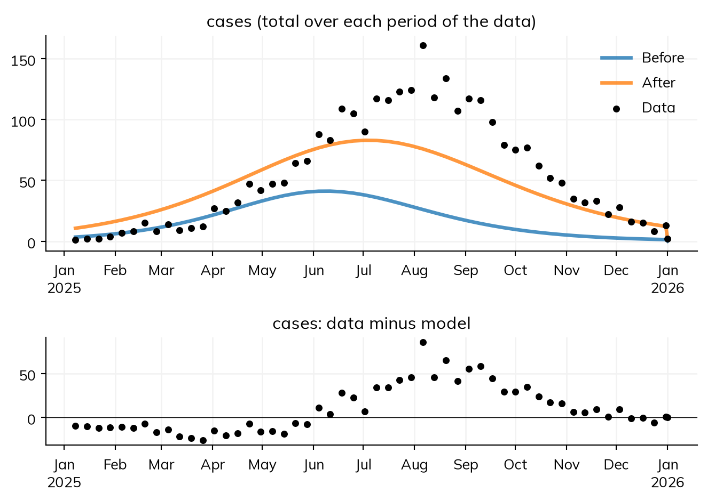
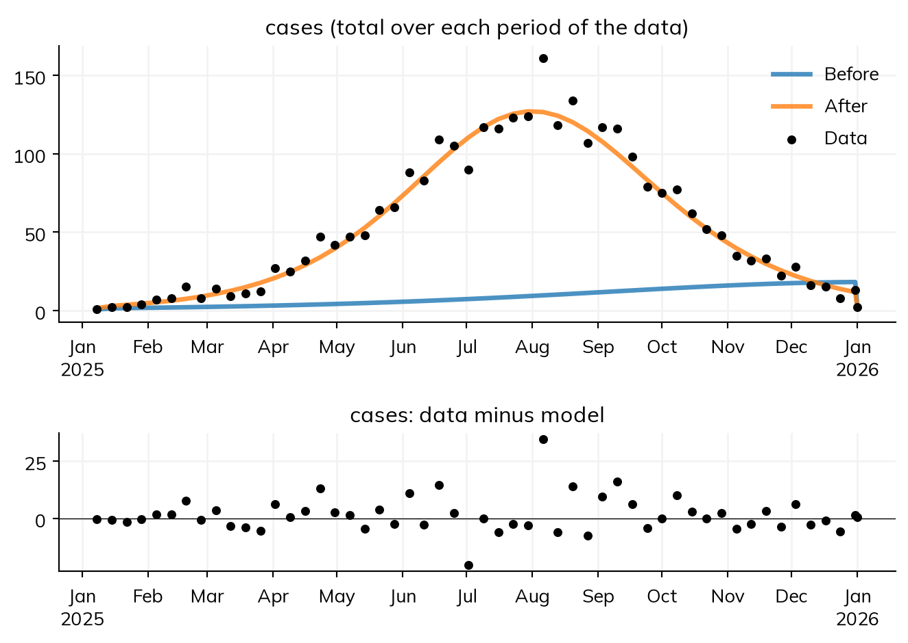

import starsim as ss
def make_seir():
""" Measles with a latent period: infected (E), then infectious (I) about 10 days later """
S, E, I, R = ss.states('S E I R')
beta = ss.par(1.5, bounds=[0.5, 4])
report = ss.par(0.3, bounds=[0.05, 1])
onset = E >> I @ ss.days(10)
cases = ss.outcome(report*onset)
return ss.Disease(S >> E @ beta*I, onset, I >> R @ ss.days(8), cases, init=dict(I=0.0001, R=0.9), name='measles')
pars = dict(total_pop=100_000, start='2025-01-01', stop='2026-01-01')
truth = ss.Sim(make_seir(), pars=dict(beta=1.9, report=0.5), rand_seed=2, verbose=0, **pars)
truth.run()
data = truth.to_data('cases', resample='week')Fit diagnostics
sim.fit() always returns values. Whether to trust them is a separate question, with several parts: does the model match the data, did the search find the best values, are the values determined by the data, and would the fitted model predict data it hasn’t seen? This page goes through the checks, in the order worth making them. It assumes the basics of Fitting a model.
The examples use a measles outbreak in a town of 100,000, 90% of whom are immune. The data are a year of weekly reported cases, made from the model with a latent period of 10 days (an SEIR model), beta = 1.9, and half of all cases reported:
Does the model match the data?
Start by looking. A fit can converge perfectly and still be wrong, if the model can’t produce the pattern in the data. Here the data are fitted with a model that leaves out the latent period, an SIR model:
def make_sir():
""" Measles without a latent period: infectious as soon as infected """
S, I, R = ss.states('S I R')
beta = ss.par(1.5, bounds=[0.5, 4])
report = ss.par(0.3, bounds=[0.05, 1])
infection = S >> I @ beta*I
cases = ss.outcome(report*infection)
return ss.Disease(infection, I >> R @ ss.days(8), cases, init=dict(I=0.0001, R=0.9), name='measles')
sir_fit = ss.Sim(make_sir(), data=data, **pars).fit()Searching on a log scale: report
Fitting by nelder-mead (2 fitted parameters, for which it is faster than gradients; override with method=)
Converged: the best two of 3 searches, from points of the scan that are apart, ended within 0.00038 of each other (objective values 0.3833 at beta=1.433, report=1; 0.3833 at beta=1.433, report=1; 0.3833 at beta=1.433, report=1; 193 evaluations)
The goodness of fit is 0.3833 at the best values and 0.6958 at the initial values/home/cliffk/idm/ssv4/starsim/fit.py:2114: AtBound:
the best-fit value of "report" (1) is at one of its bounds [0.05, 1]; consider widening them
The search converged, but the share reported ended at its upper bound of 1 (with an AtBound warning). fit.plot(residuals=True) shows why: the model’s weekly cases before and after fitting against the data, and below them the difference between the data and the fitted model (the residuals), on the data’s own weeks, as the fit compares them:
sir_fit.plot(residuals=True)
Without a latent period, an epidemic with the same R0 grows much faster, so the SIR model can’t be both as late and as large as the data: it peaks too early and too low, even with every case reported. The residuals have a pattern: too many cases in the model early on, then too few through the peak. Residuals that wander above and below zero at random, as for the right model below, are what a good fit looks like:
seir_fit = ss.Sim(make_seir(), data=data, **pars).fit(verbose=False)
seir_fit.plot(residuals=True)
A pattern in the residuals points to the structure of the model, or to how the data were defined, not to the fitting: no search will fix it. Some common patterns, and what to look at first:
| Pattern | Things to examine |
|---|---|
| The peak consistently too early or too late | The initial infections and when they are introduced; the latent period; reporting delays |
| The right shape but the wrong size | The population size; the share reported; whether the data count events (a flow) or people at a time (a stock) |
| A best value at a bound | The bounds; a missing process that the parameter is making up for; weak identification |
| Different starts giving different answers | Several optima, too short a search, a noisy objective |
| A good fit but an unstable projection | Parameters the data can’t tell apart; a change in the epidemic the model doesn’t have |
Before blaming the model, check that like is compared with like: incidence with case counts over the same interval, prevalence with a survey at a time, hospital admissions with admissions rather than beds occupied, and dates aligned (a week ending on a Sunday, not starting on one). The fit’s measure (fit.mismatch) helps compare fits to the same data, here 0.38 for the SIR model against 0.10 for the SEIR model, but the plot shows where a model fails.
Did the search converge?
Every fit says whether it converged, and how it decided, in fit.converged and fit.why, which are also printed:
print(seir_fit.converged)
print(seir_fit.why)True
the best two of 3 searches, from points of the scan that are apart, ended within 9.6e-05 of each other (objective values 0.09553 at beta=1.9, report=0.4832; 0.09553 at beta=1.9, report=0.4833; 0.09553 at beta=1.9, report=0.4833; 299 evaluations)What “converged” means depends on the method:
| Method | Converged when | If not |
|---|---|---|
SciPy optimizers ('nelder-mead', 'l-bfgs-b') |
The searches from the best few starting points of a scan end at the same value | More starting points (scan=) or searches (restarts=); a sign of several local optima, or a ridge |
| Optuna | The best score improved by less than 1% over the last quarter of the trials | More trials (n_trials=) |
| NUTS, particle MCMC | The chains agree (R-hat at most 1.01) and no draws diverged | More warm-up (warmup=); check identifiability |
Iterated filtering ('if2') |
Chains from different starts end within 2 of the best log-likelihood | More iterations or particles |
A fit that has not converged is not necessarily wrong, but it can’t be trusted until it has been run longer, or until the reason it didn’t is understood.
Is a best value at a bound?
A best value at the edge of its bounds triggers an AtBound warning, as for the SIR model above. It means one of three things:
- The true value is beyond the bound: widen it, if larger (or smaller) values are plausible.
- The data don’t determine the parameter, so nothing stops it drifting to the edge (see Parameter identification).
- The model is missing something, and the parameter is being pushed to the edge to make up for it, as the reporting share was above. Widening its bounds to allow more than 100% of cases to be reported would make the fit better and the model worse.
Does the fit give the same answer again?
A stochastic model is fitted to noisy scores, so a second fit, with another rand_seed=, shows how much the answer depends on chance. Here the model is run as a chain binomial (a stochastic compartmental model), and fitted twice:
import pandas as pd
stochastic = ss.Sim(make_seir(), data=data, solver='binomial', **pars)
rows = []
for seed in [1, 4]:
fit = stochastic.fit(n_trials=100, rand_seed=seed, verbose=False)
rows.append(dict(rand_seed=seed, beta=fit.pars.beta, report=fit.pars.report, converged=fit.converged))
pd.DataFrame(rows).round(3)| rand_seed | beta | report | converged | |
|---|---|---|---|---|
| 0 | 1 | 1.899 | 0.472 | False |
| 1 | 4 | 1.877 | 0.514 | False |
The two fits differ: β by about 1% (1.90 and 1.88, against a true 1.9) and the share reported by about 9% (0.47 and 0.51, against 0.5), and neither says it converged, since the best score was still improving at the end of the search. Even a fit that says it has converged has only stopped improving; that doesn’t make the answer precise. The noise in the scores is large compared with the difference that report makes to them. More trials, or more runs for each trial (n_runs=, 4 by default for a stochastic compartmental model), reduce this; so does a likelihood, which weighs the data by how much they vary. The fit also reruns its best values with the same seeds as the search, and warns when they then score worse than the starting values: the best trial may have been a lucky run.
For a stochastic model, also check the fit against many runs, not one: fit.sim.run(n_runs=20), as in Fitting a model. The data should lie within the range of the runs about as often as the interval says.
Does the time step matter?
A model run as agents or as a chain binomial takes whole steps, and when its rates are fast compared with the step, the step changes the results (see Solvers and backends), and so the fitted values: a fit with daily steps can find a higher β to make up for the delay the steps add. fit.sim.check_dt() reruns the fitted sim with half the step and shows how much each result changes; if they change by more than the mismatch of the fit, fit again with the smaller step.
Can the data tell the parameters apart?
Starsim notes when two parameters can’t be told apart: when they appear in the model only multiplied together, or (for a posterior) when they are almost perfectly correlated. Even without a note, check that the fit can recover known values from data made by the model itself, as this page’s examples do. Parameter identification covers this in detail.
Is the posterior reliable?
For a posterior (method='nuts', 'pmcmc', or 'abc-smc'), fit.summarize() prints a table with the posterior’s median and 95% interval for each parameter, and two checks for each:
- R-hat (
rhat): compares the spread within each chain with the spread between chains. Near 1 means the chains have found the same distribution; above 1.01, they disagree, and the posterior is not yet reliable. - Effective sample size (
ess): how many independent draws the correlated draws are worth. A few hundred is enough for a median and a 95% interval.
NUTS also counts divergent draws (fit.diagnostics.divergences), where the sampler’s path went wrong in a region of sharp curvature; even a few mean the posterior may be missing a region. If any of these checks fail, the fit warns (ss.errors.NotConverged). More warm-up (warmup=) sometimes fixes it, but a common cause is a ridge, where the data determine only a combination of parameters: then fix one, or get more data. An example of a posterior with a ridge is in Parameter identification.
Looking at the search
For a fit by Optuna, fit.study is Optuna’s own record of the search, which its plots take: how the best score improved over the trials (has it levelled off?), which parameters mattered most to the score, and the score over each pair of parameters (a long diagonal valley is a ridge that the data can’t resolve). These need Plotly:
import optuna
optuna.visualization.plot_optimization_history(fit.study)
optuna.visualization.plot_param_importances(fit.study)
optuna.visualization.plot_contour(fit.study, params=['beta', 'report'])For any method, fit.to_df() has every evaluation, with the values tried and the objective at each, for plots of your own; Parameter identification has one.
Does the model predict?
A model with more parameters usually fits better, without necessarily being better. A fairer test is how well a model fitted to the start of the data predicts the rest. ss.fit.compare_models() fits each model to all but the last 25% of each data series (holdout=), runs it forward, and scores it on the part held out:
comparison = ss.fit.compare_models({'SIR': ss.Sim(make_sir(), data=data, **pars),
'SEIR': ss.Sim(make_seir(), data=data, **pars)},
method='nelder-mead')
comparison.summarize();/home/cliffk/idm/ssv4/starsim/fit.py:2114: AtBound:
the best-fit value of "report" (1) is at one of its bounds [0.05, 1]; consider widening them
held out: the last 25% of each series (cases: 2025-10-08 to 2026-01-01)
fit error and prediction error are the normalized absolute error, on the data fitted to and on the held-out data (lower is better)The SEIR model fits better and predicts better. folds= repeats the comparison over several cut points, which shows whether the difference is larger than the spread from one cut point to another; comparison.plot() shows each model’s fit and prediction against the data.
A checklist
| Check | How | A problem looks like |
|---|---|---|
| The model matches the data | Plot the model against the data, on the data’s own periods, and the residuals (fit.plot(residuals=True)) |
A pattern in the residuals; a parameter pushed to a bound |
| The search converged | fit.converged, fit.why |
“Not converged”, with the reason |
| No value is at a bound | The AtBound warning |
A best value at the edge |
| The answer is stable | Fit again with another rand_seed= (stochastic) or from other starting points (scan=) |
Different values each time |
| The parameters are identifiable | A note that they can’t be told apart; recover known values | A ridge, or values that move together |
| The posterior is reliable | rhat, ess, divergences |
R-hat above 1.01, few effective draws, any divergences |
| The model predicts | ss.fit.compare_models() |
A model that fits well but predicts badly |
| The fit is plausible | Compare the values with what is known from elsewhere | A reporting share above 1, an infectious period of months |
The last check matters most, and no software can make it: a fit only finds the values that make this model match these data. Whether those values, and the model, make sense for the disease and the setting is a judgment for the modeler.
When reporting a fit, say enough for someone else to repeat it and judge it: what each data series is and how it was matched to the model (flow or stock, over what periods); the measure of fit or the likelihood; the parameters fitted, with their bounds and priors, and those held fixed and why; the method, its settings, and the seed; the diagnostics above; and the versions of Starsim and of the data.
Further reading
- Stan: Posterior predictive checks: checking a fitted model against data it should reproduce
- Optuna: Visualization: the plots of a search that
fit.studytakes - ArviZ: R-hat, effective sample size, and plots for checking a posterior
- pomp: Getting started: diagnostics of fits of stochastic models, including iterated filtering